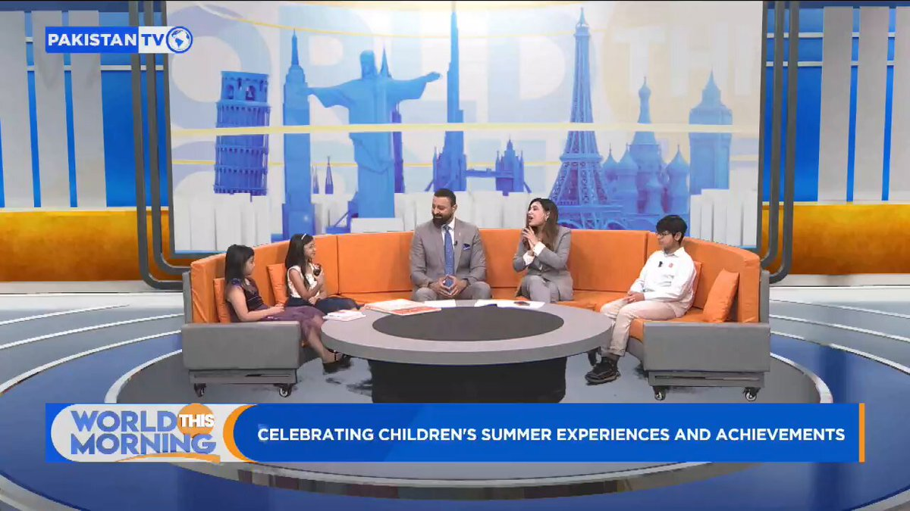
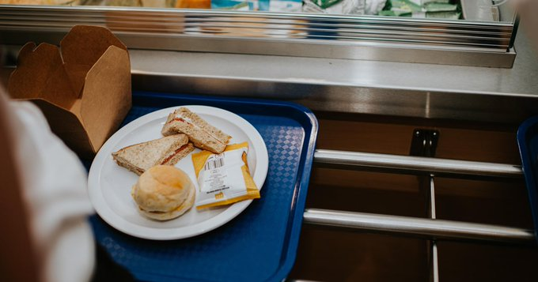
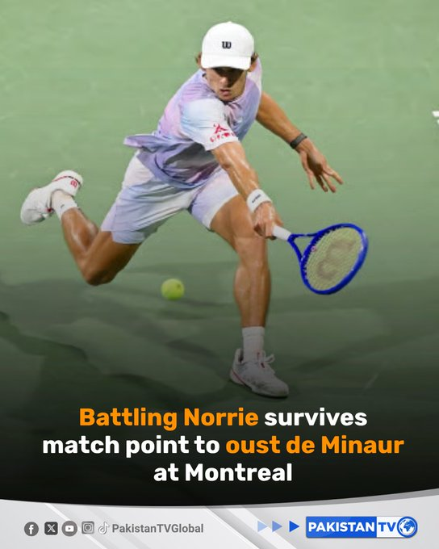
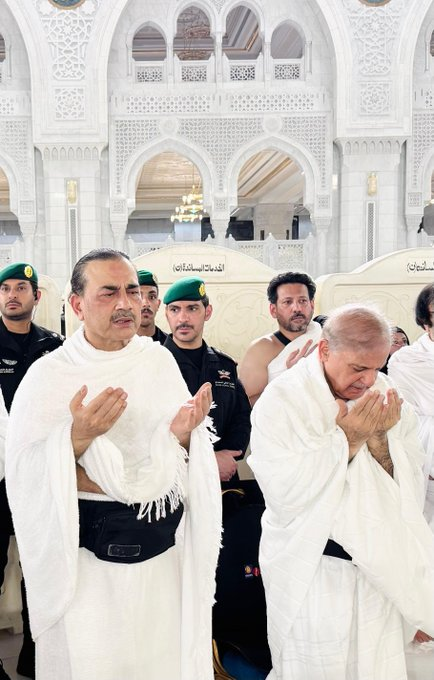
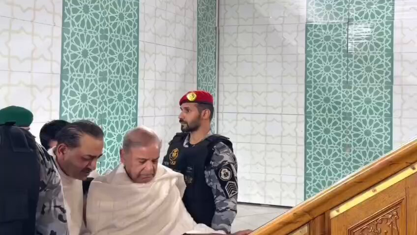
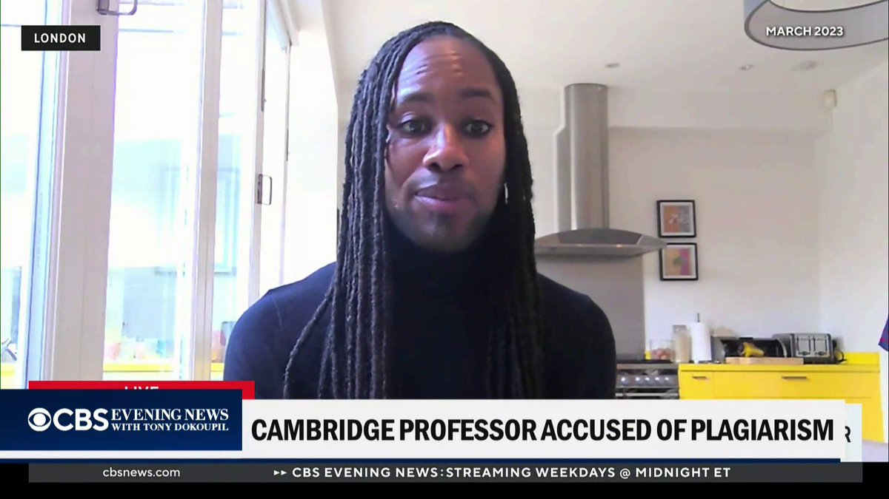
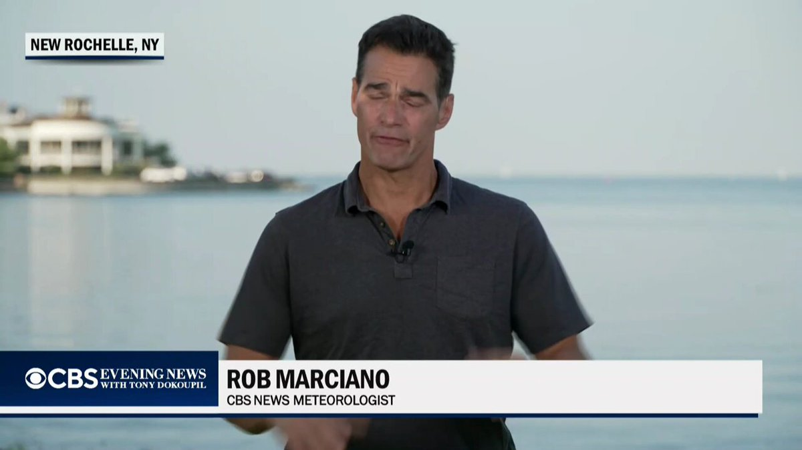
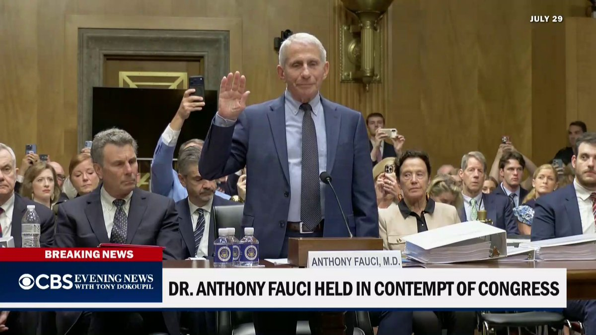
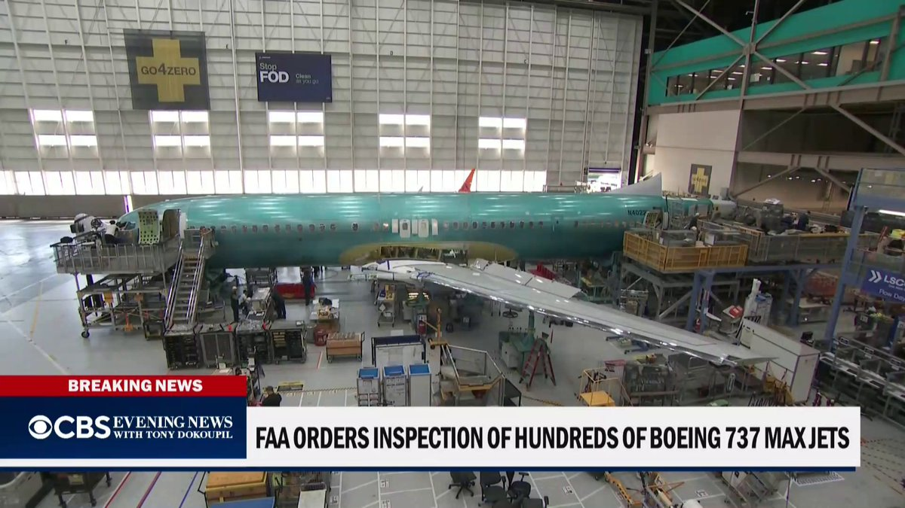

@CBSNews
📝 原文: AI models are behaving unexpectedly. Experts warn of "a really bumpy road" ahead.
🇨🇳 译文: 人工智能模型的表现出乎意料。专家警告说，前方的道路“非常崎岖”。

🕒 2026-08-07T07:00:00+00:00
| 来源 | 旧窗口内数量 | 本次新增 | 本次淘汰 | 当前窗口内共有 |
|---|---|---|---|---|
| 推文 + Dawn 新闻 | 0 | 28 | 0 | 28 |
| ARY News | 0 | 0 | 0 | 0 |
注：淘汰数 = 旧窗口内数量 + 本次新增 - 当前窗口内共有















暂无文章。